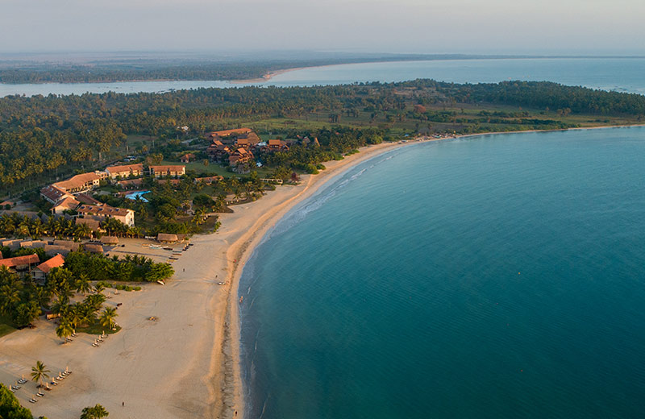
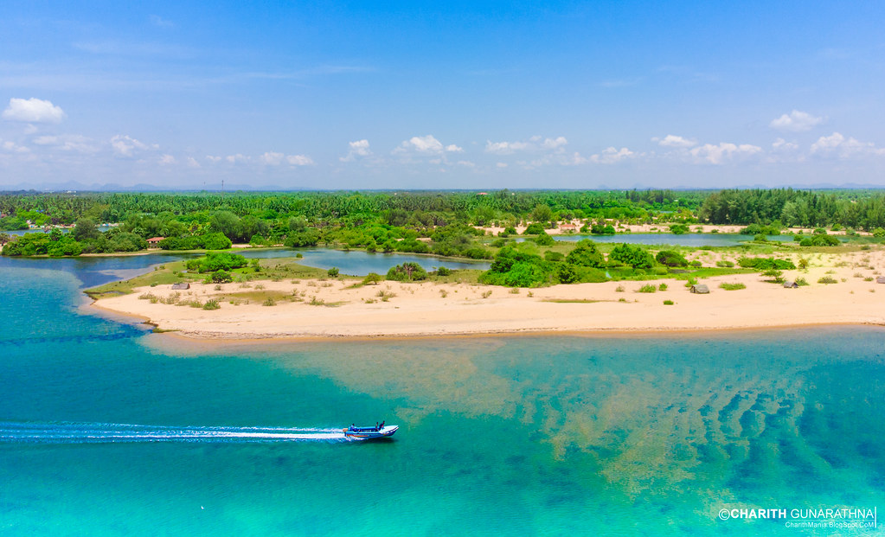
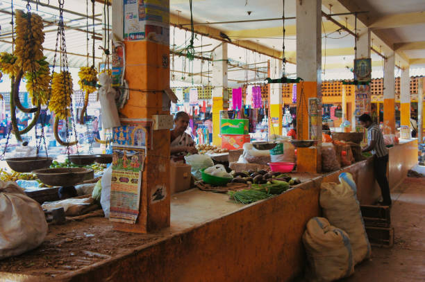
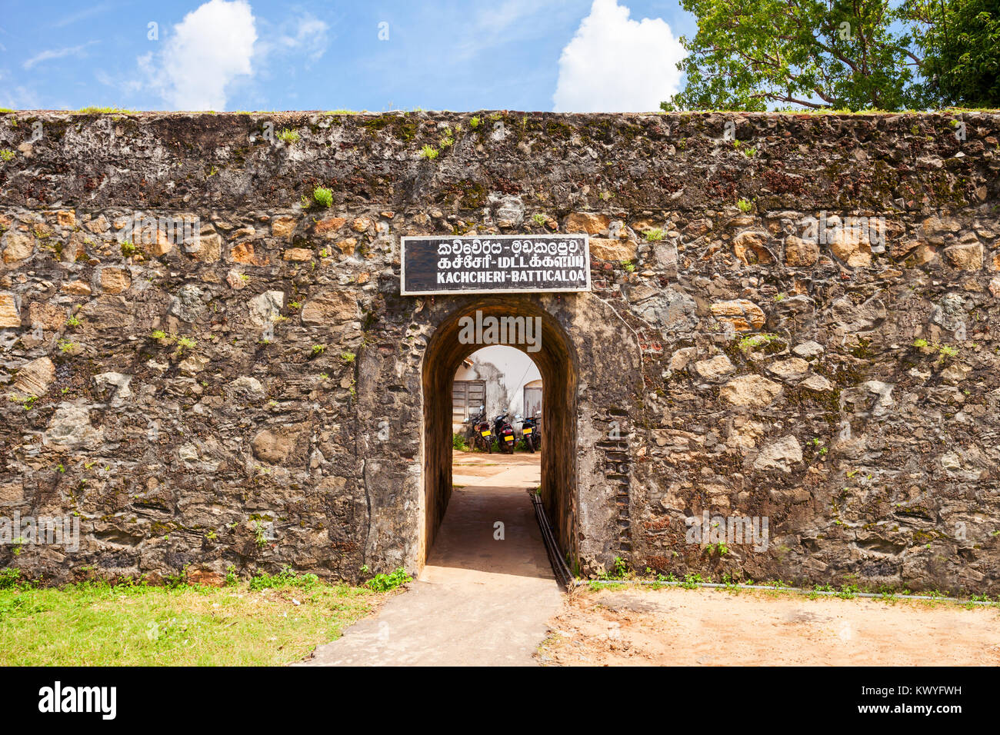
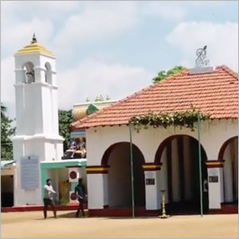
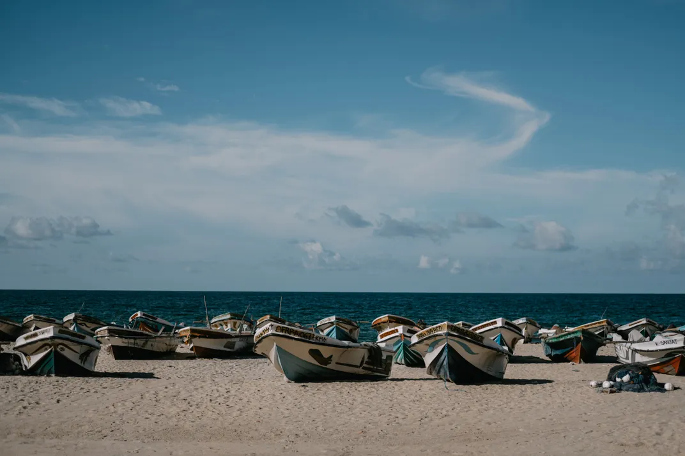
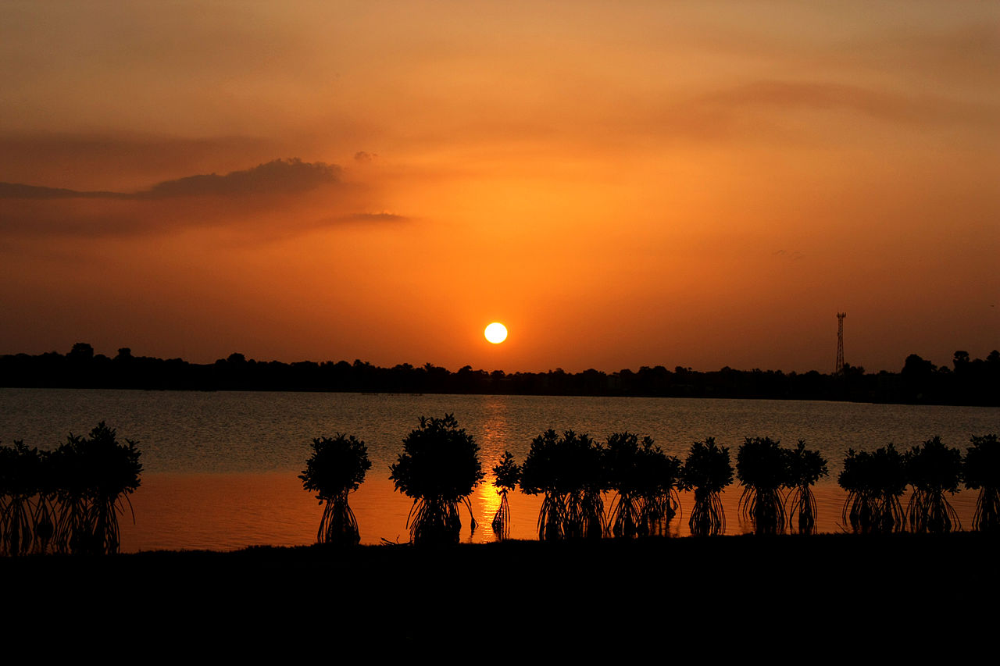
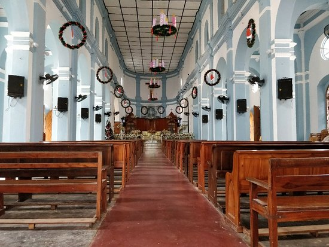
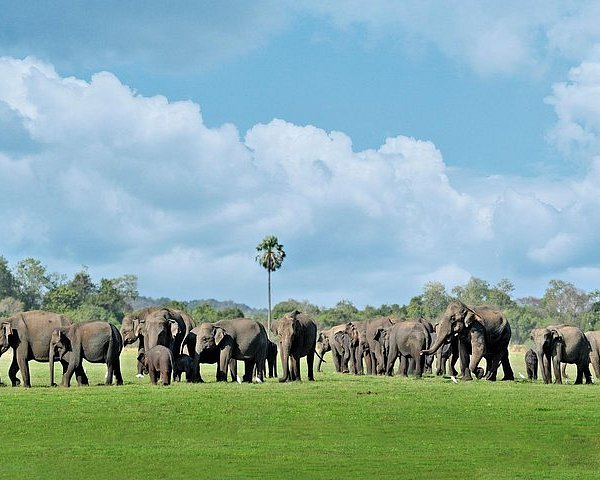
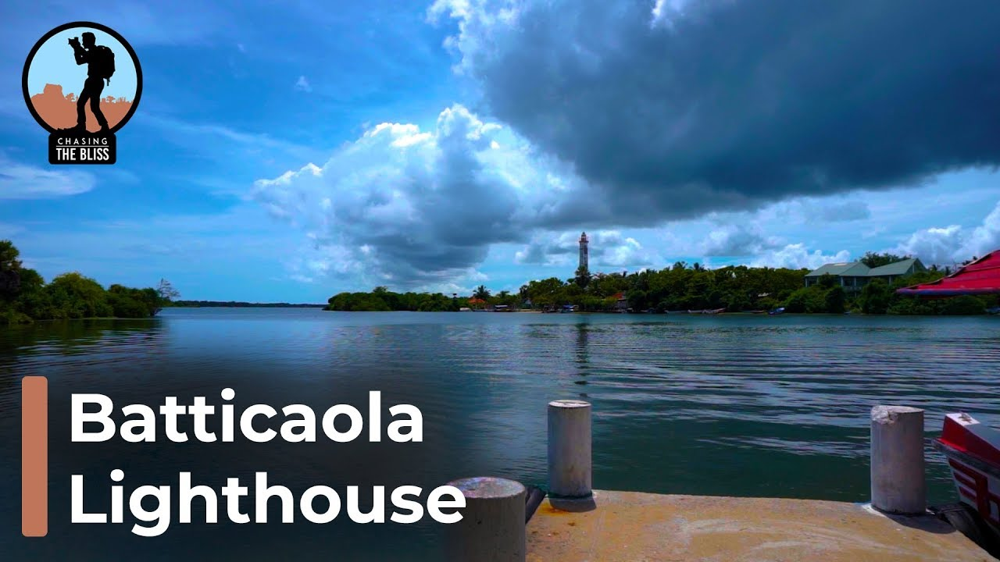
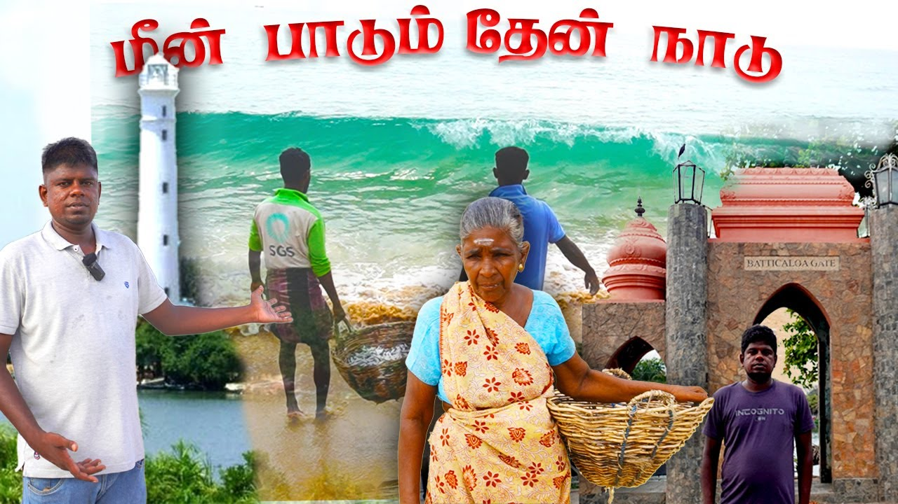
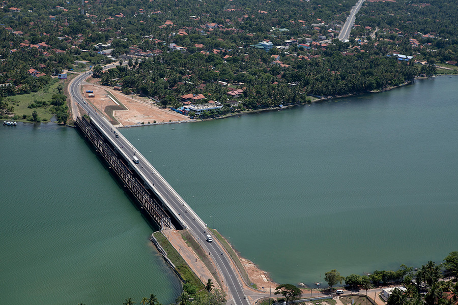
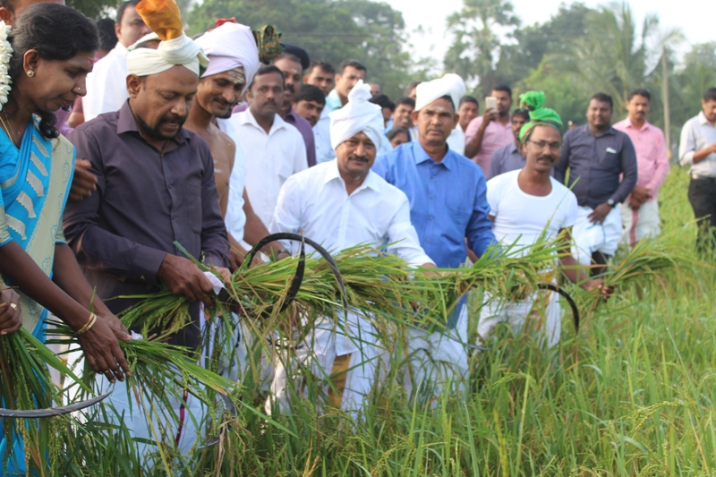
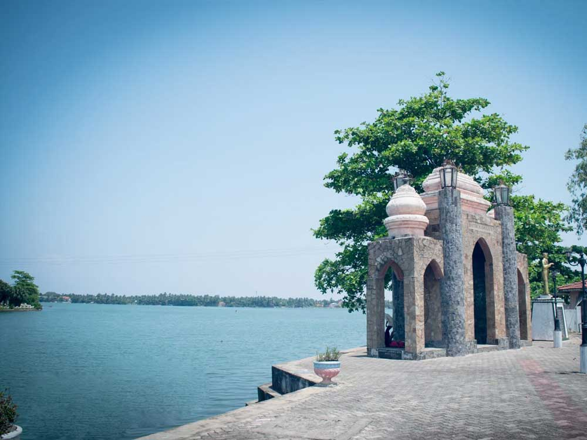
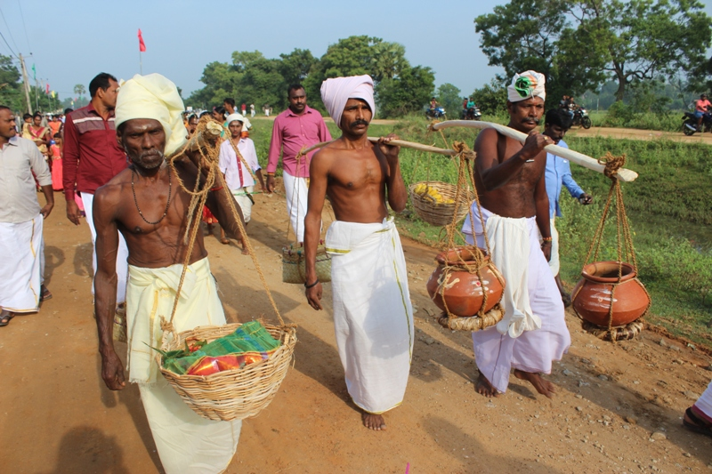
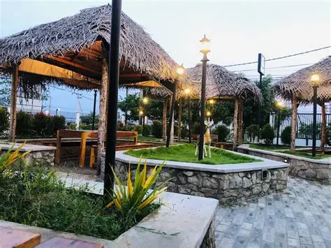
Batticaloa, often called "Batti" by locals, is a picturesque city on the east coast of Sri Lanka. Known for its beautiful lagoons, pristine beaches, and rich cultural heritage, it offers visitors a unique glimpse into Sri Lanka's less-explored eastern province.
The city is famous for its "singing fish" phenomenon in the lagoon, colonial-era architecture, and the warm hospitality of its people. Whether you're interested in history, nature, or simply relaxing by the sea, Batticaloa has something to offer every traveler.